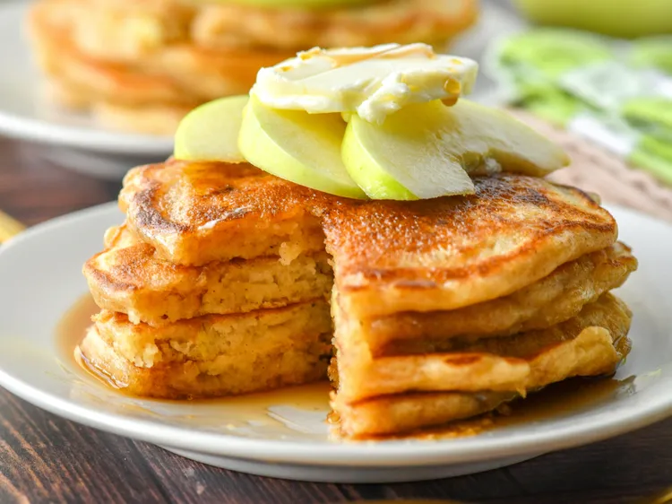

Apple Pancakes

Description
These apple pancakes are perfect for a weekend breakfast or brunch. One
batch is never enough for my family! I recommend eating these pancakes
with hot cinnamon syrup.
Ingredients
- 1 & 1/4 cups all purpose flour
- 1 tablespoon white sugar
- 1 & 1/4 teaspon cinnamon
- 1 cup milk
- 1/4 cup butter(melted)
- 1 large egg
- 1 cup shredded tart apple
Steps
-
Sift flour, sugar, baking powder, and cinnamon together into a large
bowl.
-
Make a well in the center and add milk, melted butter, and egg; mix
until smooth. Stir shredded apple into pancake batter until just
combined.
-
Heat a lightly oiled griddle or frying pan over medium-high heat. Pour
or scoop batter onto the hot griddle, using about 1/4 cup per pancake;
cook until bubbles form and the edges are dry, 2 to 3 minutes.
-
Flip and cook until browned on the other side. Repeat with remaining
pancake batter.
- Serve and enjoy!
Home